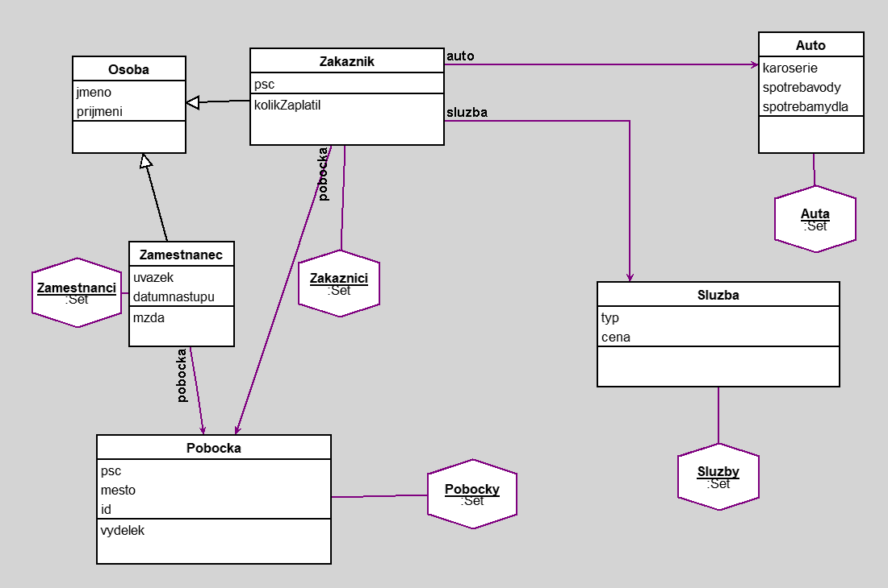

Automycka
author(s):
Daný projekt reprezentuje abstraktní model automycky.
Obsahuje tridy:
Osoba - má 2 zakl. udaje, který jsou typický pro každého cloveka - jmeno a prijmeni
Osoba ma potom 2 podtridy - Zamestnanec, který je vazan na urcitou pobocku, ma pracovní uvazek a datum nastupu a podle daných promen je vypocitana mzda(pokud pracuje min než rok, tak dostava základ, pokud pracuje pres rok dostava 3 procenta pridano, pokud vic než 2 roky dostava 7 procent pridano a pokud vice nez 3 roky tak 10 procent pridano od zakladu).
Dale je potomek Zakaznik, ktery ma vazby služba (ukazuje, jakou sluzbu pouzil), auto (jaky typ auta má) a pobocka (kde danou sluzbu dostal), tyto udaje doprovazi PSC pro urceni, zda bydli v oblasti jako dana pobocka ci nikoliv. Byla vytvorena metoda pro zijisteni, kolik zaplatil za sluzby, v potaz se bere typ sluzby a typ auta. Dale je trida auto, obsahujici udaj o karoserie, spotrebavody a spotrebamydla. Dal je trida Pobocka, ktera obsahuje udaje jako ID (slouži jako identifikator), mesto a PSC (pro urceni polohy). Obsahuje metodu, ktera vraci kolik dane pobocky vydelali. V neposledni rade je trida Sluzby, obsahujici typ a cenu. Jako dotazy by v budoucnu firmu mohlo zajimat, kde postavit dalsi pobocku, z dotazu je zrejme, ze v lokalite s PSC 11000 a 14000, jelikož od tam dojiždi nejvice zakazniku, který nemají vedle sebe mycku. Dale dotaz, který by pomohl urcit, komu poskytnout slevu, aby se zvyšila navštevnost v Brne a zaroven pro klienty s vetsi utratou (nad 1300 korun). Poslední dotaz je pro nalezeni zakazniku, kterym muzeme zaslat slevu na myti karoserie SUV a jsou z Prahy.
Workspace
Zakaznici select: [: z | (z psc = z pobocka psc) not]
Zakaznici select: [: z | (z kolikZaplatil >= 1300) & (z pobocka mesto = 'Brno')]
Zakaznici select: [: z | (z auto karoserie = 'SUV') & (z pobocka mesto = 'Praha')]
Workspace Objects
-
Auta :Set
-
Pobocky :Set
-
Sluzby :Set
-
Zakaznici :Set
-
Zamestnanci :Set
Script
Zamestnanci := Set new.
Zakaznici := Set new.
Pobocky := Set new.
Sluzby := Set new.
Auta := Set new.
p1 := Pobocka new.
p1 id: 1; mesto: 'Praha'; psc: 12000.
p2 := Pobocka new.
p2 id: 2; mesto: 'Brno'; psc: 60200.
s1 := Sluzba new.
s1 typ: 'Budget'; cena: 500.
s2 := Sluzba new.
s2 typ: 'Classic'; cena: 800.
s3 := Sluzba new.
s3 typ: 'Premium'; cena: 1200.
s4 := Sluzba new.
s4 typ: 'Ultra Premium'; cena: 1500.
a1 := Auto new.
a1 karoserie: 'Kombi'; spotrebavody: 220; spotrebamydla: 5.
a2 := Auto new.
a2 karoserie: 'Hatchback'; spotrebavody: 210; spotrebamydla: 5.
a3 := Auto new.
a3 karoserie: 'SUV'; spotrebavody: 240; spotrebamydla: 7.5.
a4 := Auto new.
a4 karoserie: 'Dodávka'; spotrebavody: 260; spotrebamydla: 9.
za1 := Zamestnanec new.
za1 jmeno: 'Karel'; prijmeni: 'Vondrak'; uvazek: 'Hlavni'; datumnastupu: '12-12-2021' asDate; pobocka: p1.
za2 := Zamestnanec new.
za2 jmeno: 'Matej'; prijmeni: 'Novak'; uvazek: 'Brigadnik'; datumnastupu: '05-06-2019' asDate; pobocka: p1.
za3 := Zamestnanec new.
za3 jmeno: 'Petr'; prijmeni: 'Svoboda'; uvazek: 'Hlavni'; datumnastupu: '08-10-2022' asDate; pobocka: p1.
za4 := Zamestnanec new.
za4 jmeno: 'Matuš'; prijmeni: 'Cerny'; uvazek: 'Hlavni'; datumnastupu: '04-15-2023' asDate; pobocka: p2.
za5 := Zamestnanec new.
za5 jmeno: 'Karel'; prijmeni: 'Nemec'; uvazek: 'Hlavni'; datumnastupu: '01-01-2020' asDate; pobocka: p2.
za6 := Zamestnanec new.
za6 jmeno: 'Libor'; prijmeni: 'Polivka'; uvazek: 'Brigadnik'; datumnastupu: '01-08-2021' asDate; pobocka: p2.
zk1 := Zakaznik new.
zk1 jmeno: 'Miloš'; prijmeni: 'Vorel'; psc: 14000; auto: a1; sluzba: s2; pobocka: p1.
zk2 := Zakaznik new.
zk2 jmeno: 'Jana'; prijmeni: 'Nova'; psc: 12000; auto: a1; sluzba: s2; pobocka: p1.
zk3 := Zakaznik new.
zk3 jmeno: 'Dominik'; prijmeni: 'Kutil'; psc: 12000; auto: a2; sluzba: s3; pobocka: p1.
zk4 := Zakaznik new.
zk4 jmeno: 'Linda'; prijmeni: 'Stocká'; psc: 60200; auto: a3; sluzba: s4; pobocka: p2.
zk5 := Zakaznik new.
zk5 jmeno: 'Klara'; prijmeni: 'Majrova'; psc: 14000; auto: a3; sluzba: s1; pobocka: p1.
zk6 := Zakaznik new.
zk6 jmeno: 'Filip'; prijmeni: 'Nguyen'; psc: 60200; auto: a2; sluzba: s4; pobocka: p2.
zk7 := Zakaznik new.
zk7 jmeno: 'Jakub'; prijmeni: 'Velky'; psc: 11000; auto: a1; sluzba: s4; pobocka: p1.
zk8 := Zakaznik new.
zk8 jmeno: 'Eva'; prijmeni: 'Horakova'; psc: 60300; auto: a4; sluzba: s1; pobocka: p2.
zk9 := Zakaznik new.
zk9 jmeno: 'Zdenek'; prijmeni: 'Savecky'; psc: 12000; auto: a4; sluzba: s2; pobocka: p1.
zk10 := Zakaznik new.
zk10 jmeno: 'Marie'; prijmeni: 'Kolarova'; psc: 11000; auto: a1; sluzba: s3; pobocka: p1.
Zamestnanci add: za1; add: za2; add: za3; add: za4; add: za5; add: za6.
Zakaznici add: zk1; add: zk2; add: zk3; add: zk4; add: zk5; add: zk6; add: zk7; add: zk8; add: zk9; add: zk10.
Pobocky add: p1; add: p2.
Sluzby add: s1; add: s2; add: s3; add: s4.
Auta add: a1; add: a2; add: a3; add: a4.
Diagram

Classes
Osoba
|
instance variables
jmeno :String
prijmeni :String
|
methods
initialize
jmeno
jmeno:
prijmeni
prijmeni:
|
|
|
code of non-accessing methods:
Pobocka
|
instance variables
id :Number
mesto :String
psc :Number
|
methods
id
id:
initialize
mesto
mesto:
psc
psc:
vydelek
|
|
|
code of non-accessing methods:
-
initialize
"generated by Daskalos"
super initialize.
psc := nil.
mesto := nil.
id := nil.
-
vydelek
| trzby |
trzby := Dictionary new.
Pobocka allInstances do:
[:pobocka |
| zakaznici trzba |
zakaznici := Zakaznik allInstances
select: [:zakaznik | zakaznik pobocka = pobocka].
trzba := zakaznici inject: 0
into: [:suma :zakaznik | suma + zakaznik kolikZaplatil].
trzby at: pobocka id put: trzba].
^trzby at: id
Sluzba
|
instance variables
cena :Number
typ :String
|
methods
cena
cena:
initialize
typ
typ:
|
|
|
code of non-accessing methods:
Auto
|
instance variables
karoserie :String
spotrebamydla :Number
spotrebavody :Number
|
methods
initialize
karoserie
karoserie:
spotrebamydla
spotrebamydla:
spotrebavody
spotrebavody:
|
|
|
code of non-accessing methods:
Zakaznik
|
instance variables
auto :Object
pobocka :Object
psc :Number
sluzba :Object
|
methods
auto
auto:
initialize
kolikZaplatil
pobocka
pobocka:
psc
psc:
sluzba
sluzba:
|
|
|
code of non-accessing methods:
-
initialize
"generated by Daskalos"
super initialize.
auto := nil.
sluzba := nil.
psc := nil.
pobocka := nil.
-
kolikZaplatil
| cenaSluzby |
cenaSluzby := 0.
sluzba typ = 'Budget'
ifTrue: [cenaSluzby := 500]
ifFalse:
[sluzba typ = 'Classic'
ifTrue: [cenaSluzby := 800]
ifFalse:
[sluzba typ = 'Premium'
ifTrue: [cenaSluzby := 1200]
ifFalse: [sluzba typ = 'Ultra Premium' ifTrue: [cenaSluzby := 1500]]]].
auto karoserie = 'SUV'
ifTrue: [cenaSluzby := cenaSluzby * 1.2]
ifFalse:
[auto karoserie = 'Kombi'
ifTrue: [cenaSluzby := cenaSluzby * 1.1]
ifFalse: [auto karoserie = 'Dodávka' ifTrue: [cenaSluzby := cenaSluzby * 1.3]]].
^cenaSluzby
Zamestnanec
|
instance variables
datumnastupu :Date
pobocka :Object
uvazek :String
|
methods
datumnastupu
datumnastupu:
initialize
mzda
pobocka
pobocka:
uvazek
uvazek:
|
|
|
code of non-accessing methods:
-
initialize
"generated by Daskalos"
super initialize.
uvazek := nil.
datumnastupu := nil.
pobocka := nil.
-
mzda
| dobazamestnani zaklad |
dobazamestnani := Date today year * 12 + Date today monthIndex
- (datumnastupu year * 12 + datumnastupu monthIndex).
zaklad := uvazek = 'Hlavni' ifTrue: [25000] ifFalse: [10000].
dobazamestnani >= 12 ifTrue: [zaklad := zaklad * 1.035].
dobazamestnani >= 24 ifTrue: [zaklad := zaklad * 1.07].
dobazamestnani >= 36 ifTrue: [zaklad := zaklad * 1.1].
^dobazamestnani < 12 ifTrue: [zaklad] ifFalse: [zaklad rounded]
Links
Data file and
class source.
Generated by Daskalos - Object Modeling Tutor (C) 2006 V. Merunka
April 30, 2023